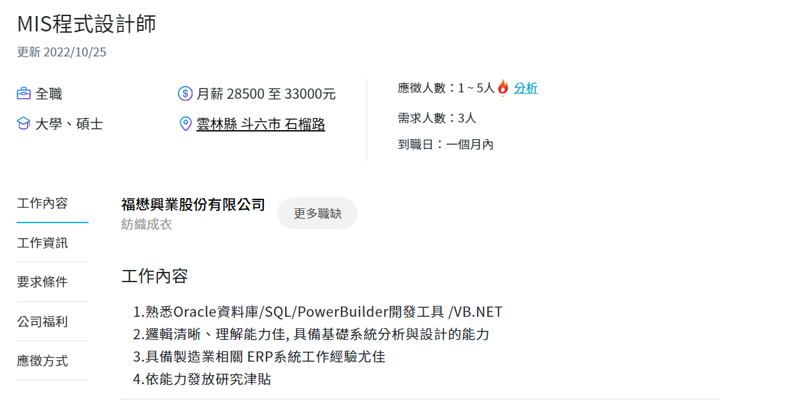

這間公司叫福懋興業股份有限公司
職務是MIS程式設計師
工作內容有
1.熟悉Oracle資料庫/SQL/PowerBuilder開發工具 /VB.NET
2.邏輯清晰、理解能力佳, 具備基礎系統分析與設計的能力
3.具備製造業相關 ERP系統工作經驗尤佳
*要求條件
工作經驗：不拘
學歷限制：大學、碩士
科系限制：資工、資管、應數
*附加條件
1、TOEIC 320分以上或具相關能力證明者(TOEFL、IELTS、GEPT、CSEPT等)